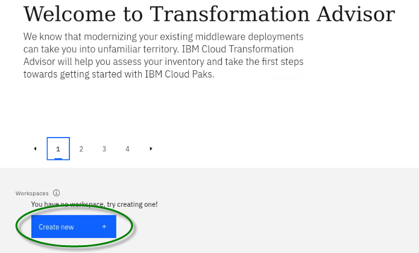
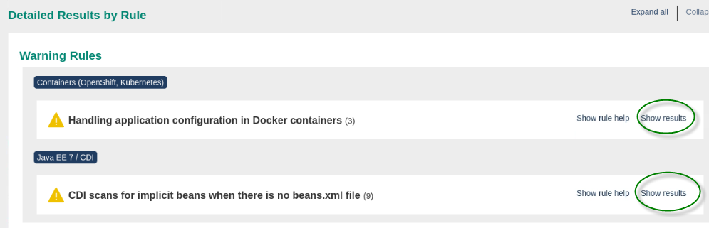
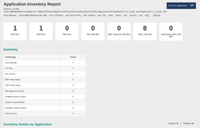
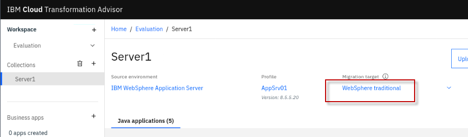

Evaluate Java Applications with Transformation Advisor
This lab is a part of the Teaching your monolith to dance Application Modernization lab series which focuses on the evaluation, re-platforming and rehosting application modernization approaches and other application modernization related solutions. This lab provides fundamental hands-on experience of the evaluation process. It shows the value of using Transformation Advisor to evaluate on-premises Java applications and identify a migration candidate for moving to the cloud. When you complete this lab, you learn how to use this tool to quickly analyze on-premises Java applications without accessing their source code and to estimate the move to cloud efforts.
IBM Cloud Transformation Advisor (Transformation Advisor) is an application modernization tool that is entitled through IBM WebSphere Hybrid Edition. Transformation Advisor helps you quickly evaluate on-premises Java EE applications for deployment to the cloud. The Transformation Advisor tool can
-
identify the Java EE programming models in the app.
-
determine the complexity of apps by listing a high-level inventory of the content and structure of each app.
-
highlight Java EE programming model and WebSphere API differences between the WebSphere profile types
-
identify Java EE specification implementation differences that might affect the app
Additionally, the tool provides a recommendation for the right-fit IBM WebSphere Application Server edition and offers advice, best practices, and potential solutions to assess the ease of moving apps to Liberty or newer versions of WebSphere traditional. It accelerates application migrating to cloud process, minimize errors and risks and reduce time to market.
1. Business Scenario
As shown in the image below, your company has several web applications deployed to WebSphere Application Server (WAS) environment.

Your company wants to move these applications to a lightweight WebSphere Liberty server on cloud, but you are not sure how much effort the migration process might take. You decide to use the IBM Transformation Advisor to do a quick evaluation of these applications without their source code to identify a good candidate application to move to cloud based on the analysis result.
2. Objective
The objectives of this lab are to:
-
learn how to collect Java application and configuration data using the Transformation Advisor Data Collector tool.
-
learn how to use the Transformation Advisor to evaluate the move to cloud efforts and to identify the good candidate for migration.
3. Prerequisites
The following prerequisites must be completed prior to beginning this lab:
-
Familiarity with basic Linux commands
-
Have internet access
-
Have a SkyTap App Mod Lab environment ready
4. What is Already Completed
A six Linux VMs App Mod Lab environment has been provided for this lab.
-
The Red Hat OpenShift Container Platform (OCP) v4.6, is installed in 6 VMs with 3 master nodes / compute nodes (the master nodes are serving as computer nodes as well).
-
master1 VM
-
master2 VM
-
master3 VM,
-
dns VM
-
nfs VM, with 3 master nodes / compute nodes (the master nodes are serving as computer nodes as well).
-
-
The desktop VM is the one you will use to access and work with OCP cluster in this lab.
-
The login credentials for the desktop VM are: User ID: ibmuser Password: engageibm
5. Lab Tasks
In this lab, you access WebSphere Application Server to review the deployment of the JEE applications. Then you are going to the Transformation Advisor to identify a good candidate application for moving to cloud. To identify which Java EE programming models are on the server, you could run the Transformation Advisor Data Collector tool against the server.
The Transformation Advisor creates an inventory of the content and structure of each application and learn about problems that might occur if you move the application to cloud. Finally, you review the analysis reports to determine the complexity of the move-to-cloud efforts and select the migration candidate app.
Here are the activities involved in this process:
-
Log in to WebSphere Application Server to review the deployed JEE applications
-
Run the Transformation Advisor Data Collector tool against the WebSphere Application Server to get application data
-
Review the analysis reports that Transformation Advisor generates to identify the right candidate application for a rapid and cost-effective migration to cloud
6. Execute Lab Tasks
6.1 Log in to the desktop VM and Get Started
-
If the VMs are not already started, start them by clicking the play button for the whole group.

-
After the VMs are started, click the desktop VM icon to access it.

The Desktop Linux Desktop is displayed. You execute all the lab tasks on this desktop VM.
-
Login with ibmuser ID.
-
Click on the ibmuser icon on the screen.
-
When prompted for the password for ibmuser, enter "engageibm" as the password:

-
-
Resize the Skytap environment window for a larger viewing area while doing the lab. From the Skytap menu bar, click on the "Fit to Size" icon. This will enlarge the viewing area to fit the size of your browser window.

-
Open a terminal window by clicking its icon from the Desktop toolbar.

-
If this is your first time to run the lab series in this lab environment, do the following to clone the GitHub repo containing the lab artifacts. Otherwise, you can skip this step.
a. In the terminal window, run the following command to clone the GitHub repository for this workshop.
git clone https://github.com/IBMTechSales/openshift-workshop-was
Sample output

- The lab materials are downloaded to the /home/ibmuser/openshift-workshop-was directory.
6.2 Review the on-prem WebSphere apps
In this task, you look at the sample applications deployed to the local WebSphere Application Server (WAS) environment. Through the application assessment phase, you are going to identify which applications would be the good candidate to move the cloud.
- Start WebSphere Application Server
In the desktop VM, you have a local WebSphere Application Server which hosts several sample applications. To start the WAS server:
a. In the terminal window, issue the command below to start the WAS server.
/home/ibmuser/startWAS.sh
- If prompted for sudo password, enter the password as: passw0rd.
Within a couple of minutes the WAS server is ready.
b. Access the WAS Admin Console to view the application deployed by clicking the Firefox icon on the Desktop toolbar.
c. From the web browser window and click WebSphere Integrated Solution Console bookmark to launch the WAS console. Or launch the WAS admin console using the URL: https://localhost:9043/ibm/console/
d. If you see the Warning: Potential Security Risk Ahead message, click Advanced>Accept the Risk and continue.
e. In the WAS Admin Console login page, enter the WebSphere Admin User ID and Password as: wsadmin/passw0rd and click Login.
f. On the WAS Console page, click Applications -> Application Types -> WebSphere enterprise applications to view the deployed applications.
In the Enterprise Applications list, you can see all applications deployed. Next, you use Transformation Advisor to analyze these applications to identify a good candidate to be moved to the cloud.


6.3 Access Transformation Advisor
The Transformation Advisor is installed in the OpenShift cluster. In this lab, you use the following steps to access the Transformation Advisor tool.
-
From web browser window, open a new Browser tab
-
Then click the IBM Cloud Transformation Advisor bookmark and log in with the OCP account credentials.
- If prompted to log in to Red Hat OpenShift Container Platform, click htpasswd field. Then log in with ibmadmin/engageibm as the username and password.
The Transformation Advisor Home page is displayed.


6.4 Download Transformation Advisor Data Collector utility
The Transformation Advisor can evaluate any Java based applications. In this lab, you are going to use it to evaluate whether the on-premises WebSphere application, Mod Resorts, is suitable to move to cloud and what the effort might be to get it there.
You can use Transformation Advisor Data Collector utility to get the application data and server configuration from the WebSphere Application Server running on the desktop VM. The utility can be downloaded from the Transformation Advisor web page and is illustrated in the following steps.
- In the Transformation Advisor page, you first create a new workspace by clicking on the Create New button.

- On the Create a new workspace page, enter the workspace name as Evaluation and then click Next.
Note: A workspace is a designated area that houses the migration recommendations provided by Transformation Advisor against your application server environment. You can name and organize these however you want, whether it’s by business application, location, or teams.

- Enter the collection name as Server1 and click Create
Note: Each workspace can be divided into collections for more focused assessment and planning. Like workspaces, collections can be named and organized in whatever way you want.
Once the Workspace and Collection are created, you have options to either download the Data Collector utility or upload existing data file. In this lab, you are going to first use the Data Collector utility to collect the application and configuration from the WebSphere environment. Once you have the data collected from WebSphere, then it is possible to choose to Upload the collected data to Transformation Advisor for analysis.

- Click Download to go to the data collector tool download page.

- In the Download page, you can download different version of the utility based on your source operating system. It also shows how to use the utility in command line to collect application data from WebSphere, WebLogic, and Tomcat servers. Since the lab VM is a Linux OS, click Download for Linux to get the utility.
- In the Download dialog window, select the Save File option and click OK.
The zipped Data Collector utility file is saved in /home/ibmuser/Downloads directory of the lab desktop VM.

6.5 Run Transformation Advisor Data Collector utility
After downloading the zipped Data Collector utility, you need to unpack it and run the utility against the WAS server to collect all deployed applications and their configuration data from WAS server.
-
Go back to the terminal window.
-
In the terminal window, navigate the /home/ibmuser/Downloads directory and view its contents with commands:
cd /home/ibmuser/Downloads/
ls -l
-
You see the downloaded data collector utility file saved in the directory.
-
Extract the data collector utility using the following command:
tar xvfz transformationadvisor-Linux_Evaluation_Server1.tgz
-
The data collector utility is extracted to /home/ibmuser/Downloads/transformationadvisor-X.Y.Z directory, where X.Y.Z is the version of the tool downloaded.
-
Execute the Data Collector utility with the commands below to start collect the deployed applications information on the WAS server.
cd /home/ibmuser/Downloads/transformationadvisor-X.Y.Z
Note: Substitute X.Y.Z with the version number of the Transformation Advisor tool that was downloaded
./bin/transformationadvisor -w /opt/IBM/WebSphere/AppServer -p AppSrv01 wsadmin passw0rd
Type 1 1to accept the license agreement and press Enter.
The utility starts to collect application data. This process takes sometimes to complete depending on how many applications deployed on the WAS server. In this lab, it might be a few minutes. When it is done, you see output like this:

-
Your application data is collected, it is saved as a zip file under the collector tool directory.
-
View the tool directory with command, you see the AppSrv01.zip file is created.
ls -l
Sample Output:
In general, if your application server and the Transformation Advisor are in the same network infrastructure, the collected data is automatically uploaded to Transformation Advisor for you to view the analysis results. Otherwise, you must manually upload the data to Transformation Advisor before you can view them.
6.6 Evaluate On-Premises Java Applications
In this section, you are going to use the Transformation Advisor UI to view the application data analysis results that was collected in the previous section.
- Go back to Transformation Advisor page in web browser, click the Server1 link to go to the Recommendations page.
In the Recommendations page, you can see all applications deployed to the WAS server are listed.
On the Recommendations page, the identified migration source environment is shown in the Profile section, and the target environment is shown in the Preferred migration section.
The data collector tool detects that the source environment is your WebSphere Application Server AppSrv01 profile.
The target environment is Liberty Runtimes, which is the default target environment.
The Recommendations page also shows the summary analysis results for all the apps in the AppSrv01 environment to be moved to a Liberty on OpenShift environment. For each app, you can see these results:

-
Name
-
Migration Target
-
Complexity
-
Issues
-
Estimated development cost (in days)
For example, if you want to move the modresorts-1_0_war.ear application to Open Liberty, the complexity level is Simple, which indicates that the application code does not need to be changed before it can be moved to cloud. The application has no dependency, has two minor level issue and the estimated development effort is zero day because no code change is required.
As you can see the default move to cloud environment is Liberty Runtimes, however Transformation Advisor can also provide migration options if you want to migrate your application to different target environments as shown below:
-
In this lab you are focusing on identifying a good candidate for > moving to the Open Liberty on OpenShift environment, so switch to > the Compatible Runtimes view, which will show additional > target runtime options, and their respective complexity of moving > the application t that target environment.
For this lab, you will focus on the modernization of moderesorts-1.0_war.ear to Open Liberty. Next, you will look at the analysis results for moderesorts-1.0_war.ear application in detail.

- Click the modresorts-1_0_war.ear link targeting Open Liberty to expand its analysis results.
The first section in the detail analysis summary page is the Complexity section. The overall complexity for the application is simple, indicating that the application can be directly moved to cloud without any code change.

- Scroll down to Complexity Rules section. You can see although there is no code change required and no development cost, the estimate migration over all develop cost is 0 days. This estimate is based on data from IBM Services engagements, which includes migrating management, server configuration, and testing.

- Expand the Issues and issues details section. You can see the only minor potential issue listed is on configuring the application in Docker container.

- Next, scroll down to the bottom of the page and click the Technology Report link, this opens a new browser window to show the application Evaluation Report.
The Technology report lists all java technologies the application used and whether these technologies are supported by a specific WebSphere platform from Liberty for Java on IBM Cloud to WebSphere traditional for z/OS. It is used to determine whether a particular WebSphere product is suitable for an application.
As you can see from the report, the Mod Resorts application only uses Java Servlet which is supported by all WebSphere editions.


- Go back to the Transformation Advisor page and click the Analysis Report link.
a. Click OK to continue.
Now you see the Detailed Migration Analysis Report opened in a new browser window.
This is the deep-dive report which shows all issue found at the code level.
b. Scroll down to Detailed Results by Rule section, you can see all the java technology issues identified based on different migration rules.

For the Mod Resorts application, there are two warning rule regarding the application configuration in Docker containers.
c. Click the Show results link next to the warning rules.
You can see the detail analysis of the issue at code level, in a specific class file and specific line. This helps developers to pinpoint where the issue is, or potential issue may be.
d. Click the Show rule help link.
This expands the Rule Help section which provides recommended solutions on how to fix the issue.
For the Docker container configuration issue, the utility provides best practice suggestion to externalize the configuration for the container.


- Go back to the Transformation Advisor page and click the Inventory Report link.
The Inventory Report shows up. This report helps you examine what is in your application, including the number of modules, their relationships, and the technologies in those modules. It also gives you a view of all the utility JAR files in the application that tend to accumulate over time. Potential deployment problems and performance considerations are also included.

a. Scroll down to view this report which serves as good decision-making tool to info you what is inside your application runtime, and to help you to have a better understanding of the application runtime, the components it has and the relationships among them.
From the analysis reports you looked at above, you know that the Mod Resorts application is supported by Open Liberty which is the target environment, and the issue that the tool identified would not affect the application migration. You can confidently select the application as a good candidate for moving to Open Liberty in containers in the repackage process with minimum effort.


- Now you know that the Mod Resorts application can be moved to Liberty, you want to know if it is also a good candidate for re-platform with traditional WebSphere in containers. To do that switch the target environment from Compatible Liberty Runtime to WebSphere traditional.

As you can see from the TA recommendation that the Mod Resorts application is also a good candidate for re-hosting in WAS Base container on cloud. If you want to review the recommendation details, you can follow the same steps you did before to go over them.
- OPTIONAL: Evaluate the PlantsByWebSphere Application
You can follow the same procedure you did for the Mod Resorts application to view the analysis results for any of the other applications that was analyzed, such as CustomerOrderServicesApp.ear application.
As you can see from the Summary list, the recommendations for the application to move to cloud are as follows:
-
The complexity level is Simple, for WebSphere Liberty and WebSphere Traditional, which means that the application code can be deployed to Liberty on OpenShift without any changes.
-
The estimated development effort is 0 day because no code changes are needed.

6.7 View the Mod Resorts application
From the analysis you did above, you know that the Mod Resorts application is a good candidate for moving to cloud, you can view how the application looks like, as it is currently running in the WebSphere Traditional server on the desktop VM.
- From the web browser window, click new Tab to open a new browser window. Type the Mod Resorts application URL: http://localhost:9080/resorts/ and press Enter.
The Mod Resorts application home page is displayed.

- Click WHERE TO? dropdown menu to see the city list.

- Click PARIS, FRANCE from the list, it shows the weather of the city.

- Explore the migration bundle for the Mod Resorts application
Transformation Advisor will display details about the migration bundle that it generated to accelerate the modernization of applications to containers in OpenShift. The migration bundle includes diverse artifacts, depending on the needs of the application to accelerate the build and deployment of an application Docker image into OpenShift platform.
The user can choose to create a migration bundle for either
-
binary project of an application (uploading a WAR/EAR file and its dependent libraries)
-
source code project of an application, so that the application source files can be modernized and maintained
Now, let’s quickly explore a Migration Plan for the Mod Resorts application to see the artifacts that Transformation Advisor creates to expedite the app deployment to OpenShift Platform.
-
Click on the menu with the “hamburger icon” next to the ModResorts application analysis to display the menu choices and choose View migration plan:

-
Notice the contents of the migration bundle for the Source code option.
To accelerate the application modernization, the artifacts produced by Transformation Advisor include:
-
server.xml: the configuration for the Liberty server
-
pom.xml: Build the application using Maven
-
Application CR: Custom Resource for the application to be deployed to OpenShift via the Open Liberty Operator
-
Dockerfile: Create the Docker image for the application
The user will be able to choose to download the artifacts as a migration bundle or push the bundle contents into a GitHub repository.

8. Summary
In this lab, you learned how to evaluate the existing Java application using IBM Cloud Transformation Advisor. As a part of IBM Application Modernization solutions, the Transformation Advisor tool provides a recommendation for the right-fit IBM WebSphere Application Server edition and offers advice, best practices, and potential solutions to assess the ease of moving apps to Liberty or to WAS container, or to newer versions of WebSphere traditional.
Transformation Advisor accelerates application migrating to Liberty and containers and helps minimize errors and risks and reduce time to market. To learn more about Application Modernization solutions, please continue with the rest of the lab series.
Congratulations! You have successfully completed the lab “Evaluate On-Premises Java Apps with Transformation Advisor”.
Next
Please follow the link to do the next lab Operational Modernization: